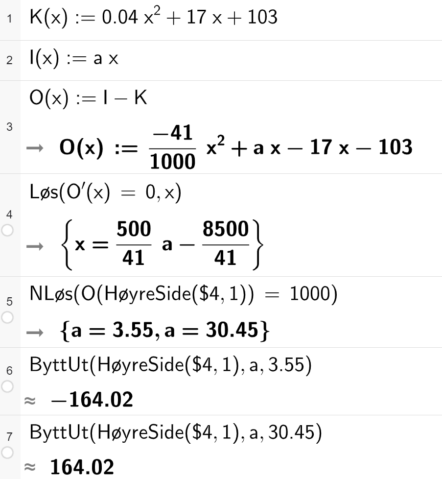

Løysingsforslag eksamen S1 - H23
Her er eit forslag til løysing av hausteksamen i S1 2023. I del 2 er oppgåvene stort sett Python brukt som hjelpemiddel.
Eg kan ikkje lova at løysinga er feilfri… 😊 Gje meg gjerne ein lyd i kommentarfeltet eller her om du ser feil 🔍
Sist oppdatert: 16.11.2023
Miniatyrbilete: Exam icons created by Freepik - Flaticon
Eksamenssettet finn du hos UDIR: Finn eksamensoppgaver
Del 1 - utan hjelpemiddel
Oppgåve 1
Skriv så enkelt som mogleg
\[ \begin{align*} \left( \frac{3a^2}{2b^3}\right)^2 \cdot \left( \frac{a^2 b^{-5}}{4}\right)^{-1} &= \left( \frac{3^2 a^4}{2^2 b^6}\right) \cdot \left(\frac{a^{-2} b^{5}}{{(2^2)}^{-1}}\right) \\ &= \left(\frac{3^2 a^4 a^{-2} b^5}{2^2 b^6 2^{-2}}\right) \\ &= \frac{3^2 a^2 b^5}{b^6} \\ &= \frac{9a^2}{b} \end{align*}\]
Oppgåve 2
Skriv uttrykka i stigande rekkefølge: \[2\ln e^{3} \quad , \quad 3\lg 70 \quad , \quad e^{3\ln 2} \]
Ser på kvart uttrykk for seg.
Først \(2\ln e^3\) \[2 \ln e^3 = 2\cdot 3 \ln e = 6 \cdot 1 = 6\]
Vidare \(3 \lg 70\) \[3 \lg 70 = 3 \lg (7\cdot 10) = 3 (\lg 7 + \lg 10) = 3 \lg 7 + 3 \] Veit at \(0<\lg 7 < 1\) så \(3 \lg 7 < 3\) og \(3 \lg 70 < 6\)
Til slutt \(e^{3\ln 2}\) \[e^{3\ln 2} = {\left(e^{\ln 2}\right)^3} = 2^3 = 8\]
I stigande rekkefølge: \[3\lg 70 \quad , \quad 2\ln e^{3} \quad , \quad e^{3\ln 2} \]
Oppgåve 3
Du kastar tre terningar
a) alle ulike
Terninane har seks sider. Finn sannsynet for at alle terningane viser forskjellige tal på auge. \[P(\text{alle ulike}) = \frac{6}{6} \cdot \frac{5}{6} \cdot \frac{4}{6} = 1\cdot \frac{20}{36} = \frac{5}{9}\]
Eventuelt \[P(\text{alle ulike}) = \frac{\text{gunstige utfall}}{\text{moglege utfall}} = \frac{6\cdot 5 \cdot 4}{6\cdot 6\cdot 6} = \frac{5}{9}\]
b) nøyaktig to terningar er like
Det at nøyaktig to terningar er like skjer viss ikkje alle terningane viser ulikt, eller alle terningane viser likt.
\[P(\text{to like}) = 1 - P(\text{alle like}) - P(\text{alle ulike})\]
Må finna \(P(\text{alle like})\)
\[P(\text{alle like}) = \frac{\text{gunstige utfall}}{\text{moglege utfall}} = \frac{6\cdot 1 \cdot 1}{6\cdot 6\cdot 6} = \frac{1}{36}\]
Dermed kan me finna sannsynet for at nøyaktig to er like:
\[ \begin{align*} P(\text{to like}) &= 1 - P(\text{alle like}) - P(\text{alle ulike}) \\ &= 1 - \frac{1}{36} - \frac{5}{9} \\ &= \frac{36}{36} - \frac{1}{36} - \frac{5\cdot 4}{9 \cdot 4} \\ &= \frac{36-1-20}{36} \\ &= \frac{15}{36} \\&= \frac{5}{12} \end{align*}\]
Oppgåve 4
Ein funksjon \(f\) er gitt ved
\[f(x) = \begin{cases} x^2+3x-a^2 & \text{for } x < 1 \\ x-1 & \text{for } x \geq 1 \end{cases} \]
Bestem \(a\) slik at funksjonen blir kontinuerleg.
Viss funksjonen skal vera kontinuerleg må \[\begin{align*} \lim_{x\rightarrow 1^{-}}f(x) &= \lim_{x\rightarrow 1^{+}}f(x) \\ 1^2 + 3\cdot 1 - a^2 &= 1-1 \\ 4-a^2 &= 0 \\ a^2 &= 4 \\ a &= \pm 2 \end{align*} \]
\(f(x)\) er kontinuerleg når \(a=-2 \vee a=2\)
Oppgåve 5
Ei bedrift produserer ei vare. Dei daglege kostnadane \(K\) i kroner ved produksjon av \(x\) einingar av vara er gitt ved \[K(x) = 0,1x^2 + 100x + 9000\]
Den økonomiansvarlege i bedrifta har laga programmet nedanfor.
Me kjenner att K(a + h) - K(a))/h som definisjonen til den deriverte av \(K\). Programmet finn dermed ut kva tid den deriverte til \(K\), grensekostnaden (kompetansemål i S2), blir større enn/passerer grense = 200.
Resultatet når ein køyrer programmet vert då den siste x-verdien (heiltal) som gjer \(K'(x) \leq 200\).
Løyser likninga \(K'(x)=200\):
\[\begin{align*} K'(x) &= 200 \\ 0,2x + 100 &= 200 \\ 0,2x &= 200 - 100 \\ x &= \frac{100}{0,2} = 500 \end{align*} \]
Dermed er \(K'(500) = 200\) som vil seie at programmet skriv ut 500 når det køyrer, sidan \(K'(501)\) vil vera større enn vilkåret i while-løkka i rad 8. (sidan \(K'(a)\) er ein lineær funksjon med positivt stigningstal).
Dette fortel bedrifta at om ein aukar produksjonen frå 500 til 501 einingar per veke så vil kostnadane auka med omlag 200 kr. Det vert 200 kr dyrare å laga ei til eining av vara. (og denne grensekostnaden vert større og større sidan \(K'(x)\) har positivt stigningstal.
Del 2 - med hjelpemiddel
Oppgåve 1
Ein møbelfabrikk produserer ein type sofaar. Tabellen viser samanhengen mellom tal sofaar produsert per månad og produksjonskostnadane per månad.
| Tal sofaar | Produksjonskostnad (i tusen kr) |
|---|---|
| 10 | 270 |
| 25 | 550 |
| 40 | 870 |
| 70 | 1500 |
| 140 | 2200 |
| 100 | 3300 |
| 180 | 4500 |
Fabrikken sel alle sofaane til ei møbelkjede. Dei får 28 000 kr per sofa.
a) Finne O(x)
Bruker regresjon til å finna eit uttrykk for \(K(x)\) som passar med tala i tabellen. \(x\) er talet på sofaar produsert.
import numpy as np
# definerer variablar for x og y
x = np.array([10, 25, 40, 70, 100, 140, 180])
y = np.array([270, 550, 870, 1500, 2200, 3300, 4500])
# finn koeffesientane med regresjon (andregradsfunksjon)
a, b, c = np.polyfit(x, y, 2)
print(f"K(x) = {a:.3f}x^2 + {b:.0f}x + {c:.0f}")K(x) = 0.041x^2 + 17x + 103Veit at dei får 28000 kr per sofa. Dermed er \[I(x) = 28x\]
Overskotsfunksjonen finn me når me trekk kostnadane frå inntektene.
\[O(x) = I(x) - K(x) = 28x - (0.041x^2 + 17x + 103) = -0.041x^2 + 11x - 103\]
Modellen i oppgåva er den samme som me kom fram til her, og er dermed ein god modell for overskotet.
b) Størst overskot
Finn ekstremalpunktet til \(O(x)\) for å finna produksjonsmengda som gjev størst overskot. Sidan andregradsleddet er negativ er grafen konkav og ekstremalpunktet er difor eit toppunkt (størst overskot).
from sympy import Symbol, diff, Eq, Reals, solveset
# definerer x
x = Symbol("x")
O = -0.041*x**2 +11*x -103
# definerer vs og hs av likninga
vs = diff(O) #O'(x)
hs = 0
# set opp likninga, og løyser ho
likning = Eq(vs, hs)
løysing = solveset(likning, x, domain=Reals)
# skriv ut svaret
print(f"x = {løysing.evalf(4)}")x = {134.1}Bedrifta får størst overskot om dei produserer 134 sofaar i månaden.
c) Lågast salspris
Fabrikken ønskjer at overskotet skal vere 1 000 000 kr per månad. Dei vil endre salsprisen på sofaane. Bestem den lågaste salsprisen dei kan setje per sofa dersom dei skal få dette overskotet.
Løyser likninga med CAS i Python (SymPy).
from sympy import Symbol, diff, Eq, Reals, solveset
# definerer symboler
x = Symbol("x")
a = Symbol("a")
# definerer K(x) og I(x). Ny pris = a.
K = 0.041*x**2 + 17*x + 103
I = a*x
# Bestemmer O(x)
O = I - K
# Finn likning for ekstremalpunktet til O
vs = diff(O, x)
hs = 0
# set opp likninga, og løyser ho
likning = Eq(vs, hs)
løysing = solveset(likning, x, domain=Reals)
løysing\(\displaystyle \mathbb{R} \cap \left\{12.1951219512195 a - 207.317073170732\right\}\)
Ser at \(O(x)\) har ekstremalpunkt i \(x=12.2a - 207.3\).
# definerer x-verdien til ekstremalpunktet uttrykt ved a
x_topp = 12.2*a - 207.3
# finn O(x_topp)
nyO = O.subs(x, x_topp)
# Sett opp likning for O(x_topp)=1000
vs = nyO
hs = 1000
# set opp likninga, og løyser ho
likning = Eq(vs, hs)
løysing = solveset(likning, a, domain=Reals)
løysing\(\displaystyle \left\{3.55039004456709, 30.449616515434\right\}\)
Ser at \(a = 3.55 \vee a = 30.45\). Sjekkar kva \(x\) er for dei ulike verdiane.
a1 = 3.55
a2 = 30.45
x1 = x_topp.subs(a, a1).evalf()
x2 = x_topp.subs(a, a2).evalf()
print(f"Pris på {a1*1000} kr gjev x = {x1:.0f}")
print(f"Pris på {a2*1000} kr gjev x = {x2:.0f}")Pris på 3550.0 kr gjev x = -164
Pris på 30450.0 kr gjev x = 164Produksjonsmengda, \(x\), må vera positiv. Dermed er den lågaste prisen bedrifta kan ta for å få 1M kr overskot 30450 kr pr. sofa.
Her er løysing av 1c i “vanleg” CAS.

Oppgåve 2
Undersøkingar viser at 10 % av alle menn og 8 % av alle kvinner er venstrehendte. På ein skule er det 280 gutar og 220 jenter.
a) minst 25 gutar er venstrehendte
Bestem sannsynet for at minst 25 av gutane er venstrehendte.
Bruker ein binomisk modell for å løysa dette sidan det er
- to utfall (venstrehendt og ikkje venstrehendt)
- uavhengige delforsøk (om ein gut er venstrehendt påverkar ikkje sannsynet for at neste gut er venstrehendt)
- likt sannsyn for alle delforsøka (\(p=0,10\))
import numpy as np
# definerer tilfeldighetsgeneratoren
rng = np.random.default_rng()
# tal simuleringar
N = 10000000
# simulerer uttrekk av 280 gutar
simulert = rng.binomial(n = 280, p = 0.1, size = N)
# tel opp gunstige utfall og finn sannsynet
gunstige = sum(simulert >= 25)
sannsyn = gunstige / N
print(f"P(X>=25) = {sannsyn:.4f}")P(X>=25) = 0.7530Sannsynet for at minst 25 av gutane er venstrehendte er \(75,3\, \%\).
b) P(minst tre gutar venstrehendt) > 0.20
Kor mange gutar må det vere i ein klasse dersom sannsynet for at minst tre av gutane er venstrehendte, skal vere større enn 20 %?
Framleis binomisk. Finn svaret med simuleringar.
def minst_tre_av(n):
# tal simuleringar
N = 1000
# simulerer uttrekk av n gutar
simulert = rng.binomial(n = n, p = 0.1, size = N)
# tel opp gunstige utfall og finn sannsynet
gunstige = sum(simulert >= 3)
sannsyn = gunstige / N
return sannsyn
n_gutar = 3
while minst_tre_av(n_gutar) < 0.20:
n_gutar += 1
print(n_gutar)16Det må vera 16 gutar i klassen for at sannsynet for at minst tre av gutane skal vera venstrehendte skal vera større enn 16 %.
c) Nøyaktig tre venstrehendte elevar i klassen
I ein klasse er det 13 gutar og 17 jenter. Bestem sannsynet for at nøyaktig tre av elevane i klassen er venstrehendte.
Her òg er det binomisk sannsyn. Bruker simuleringar og finn jentene og gutane for seg.
# tal simuleringar
N = 10000000
# trekk venstrehendte jenter og gutar for seg
jenter = rng.binomial(n=17, p=0.08, size=N)
gutar = rng.binomial(n=13, p=0.10, size=N)
# finn totalt tal venstrehendte kvart forsøk
venstrehendte = jenter + gutar
# tel opp gunstige og finn sannsynet.
gunstige = sum(venstrehendte == 3)
sannsyn = gunstige / N
print(f"P(nøyaktig tre venstrehendte) = {sannsyn:.4f}")P(nøyaktig tre venstrehendte) = 0.2308Sannsynet for at nøyaktig tre av elevane er venstrehendte er 23,1%.
Oppgåve 3
Per og Kåre set inn like store beløp på kvar sin konto. Per får ei årleg rente på 3,00 %, mens Kåre får ei årleg rente på 6,00 %.
a) finne sparebeløp
Kva for eit beløp må Per setje inn dersom han skal ha 30 000 kroner på kontoen etter 8 år?
Løyser likninga \(x\cdot 1.03^8 = 30000\) i CAS:
from sympy import Symbol, Eq, Reals, solveset
# definerer symboler
x = Symbol("x")
# Finn likning
vs = x * 1.03**8
hs = 30000
# set opp likninga, og løyser ho
likning = Eq(vs, hs)
løysing = solveset(likning, x, domain=Reals)
løysing\(\displaystyle \left\{23682.2770294181\right\}\)
Per må sette inn 23683 kr for å ha 30 000 kr på kontoen etter 8 år.
b) dobbelt sparebeløp
Påstand
Det vil gå nøyaktig dobbelt så lang tid før beløpet Per har på konto, har dobla seg, som det vil gå før beløpet Kåre har på konto, har dobla seg.
Argumenter for at påstanden ikkje er riktig.
Dersom dette stemmer må \(1.03^{2x}\) og \(1.06^x\) vera det same. \[1.03^{2x} = (1.03^2)^x = 1.0609^x \neq 1.06^x\]
Påstanden er ikkje riktig.
c) doble totalt sparebeløp
Kor lang tid vil det går før Per og Kåre til saman har dobbelt så mykje pengar som dei sette inn på kontoane, dersom den årlege renta er høvesvis 3,00 % og 6,00 %?
Kallar innskotet for \(I\). Då får me likninga
\[I\cdot 1.03^x + I\cdot 1.06^x = 4I \Leftrightarrow 1.03^x + 1.06^x = 4\]
Løyser i CAS:
from sympy import Symbol, Eq, nsolve
# definerer symboler
x = Symbol("x")
# Finn likning
vs = 1.03**x + 1.06**x
hs = 4
# set opp likninga, og løyser ho numerisk
likning = Eq(vs, hs)
løysing = nsolve(likning, x, 1)
print(løysing)15.2433642255997Viss dei får rente ein gong i året vil beløpet ha (litt meir enn) dobla seg i løpet av 16 år.
Oppgåve 4
Du kastar fem terningar.
a) minst to like
Bestem sannsynet for at minst to av terningane viser same tal på auge. \[P(\text{minst to like}) = 1 - P(\text{ingen like})\]
Reknar ut med python:
# gunstige / moglege utfall
ingen_like = (6*5*4*3*2) / (6**5)
minst_to_like = 1 - ingen_like
print(f"P(minst to like) = {minst_to_like:.4f}")P(minst to like) = 0.9074Sannsynet for minst to like terningar er 0.907.
b) sum auge
La X vere summen av talet på auge på dei fem terningane. Bruk programmering til å bestemme \(P(X>20)\).
Bruker simulering til å svara på dette:
import numpy as np
# definerer tilfeldighetsgeneratoren
rng = np.random.default_rng()
# tal simuleringar
N = 10000000
# triller 5 terningar N gongar
terningar = rng.integers(1, 7, size=(5, N))
# finn summen av kvart forsøk
fem_kast = terningar.sum(axis=0)
# tel opp kor mange gongar summen vart større enn 20
gunstige = sum(fem_kast > 20)
# finn sannsynet og skriv ut
p = gunstige / N
print(f"P(X > 20) = {p:.4f}")P(X > 20) = 0.2216Finn at \(P(X>20)\approx 0.221\). Talet simuleringar er så høgt (10 000 000) at dette sannsynet er ganske nøyaktig.
Her bruker eg ei todimensjonal array/tabell for å rekna ut sannsynet.
Trillar terningar:
[[2 5 4 4 5 1 5 6 6 1]
[4 5 1 4 6 5 5 3 2 6]
[2 2 4 2 5 2 1 4 5 4]
[4 2 2 1 1 5 5 1 6 4]
[1 3 6 3 4 3 3 6 4 4]]Ser at denne tabellen får 5 rader og N kolonner.
Finn vidare summen av kvar kolonne:
c) bestemme k
Bestem den største verdien av k som er slik at \(P(X\geq k )> 0,8\)
Startar med å gjera koden frå (b) om til ein funksjon som returnerer sannsynet for at P(X>= k).
Bruker denne funksjonen til å sjå på ulike verdiar for k. Startar med 30 (som er maks sum) og reduserer med 1 til sannsynet vert mindre enn 0,8.
Den største verdien k kan ha er 14.
Oppgåve 5
Du skal lage ein kasse utan lokk. Han skal ha form som eit rett prisme. Grunnflata i kassen skal vere kvadratisk. For at vekta ikkje skal bli for stor, kan ikkje det samla arealet av platene som blir brukte til å lage kassen, vere meir enn \(120\, dm^2\).
a) botn på 5 dm
Kva er det største volumet kassen kan få dersom sidene i botnen skal vere \(5\, dm\)?
Lagar uttrykk for areal og volum. Kallar sidene til grunnflata \(s\) og høgda \(h\). \[V = s^2 h\] \[A = s^2 + 4sh\]
Med \(s=5\) er det begrensinga i areal av platene på \(120\,dm^2\) som er avgrensande. Finn høgda når \(A=120\). Bruker CAS:
from sympy import Symbol, Eq, Reals, solveset
# definerer symboler
s = Symbol("s")
h = Symbol("h")
# Set opp likningane
A = s**2 + 4*s*h
V = s**2 * h
# Finn uttrykk for h når A=120 og s=5
A_2 = A.subs(s, 5)
likning = Eq(A_2, 120)
løysing = solveset(likning, h, domain=Reals)
løysing\(\displaystyle \left\{\frac{19}{4}\right\}\)
Bruker \(h=\frac{19}{4}\) for å finne volumet.
Med sider på \(5\,dm\) er maks volum \(118.75\,dm^3\).
b) maks volum
Kva er det maksimale volumet kassen kan få?
Lagar uttrykk for \(h\) uttrykt ved \(s\). Brukar det til å laga funksjon for volum som funksjon av sidelengde, \(V(s)\). Finn ekstremalpunktet til denne funksjonen.
\(\displaystyle \mathbb{R} \cap \left\{\frac{120 - s^{2}}{4 s}\right\}\)
\(\displaystyle \frac{s \left(120 - s^{2}\right)}{4}\)
from sympy import diff
# deriverer
dV = V_funk.diff()
# løyser V'=0
likning = Eq(dV, 0)
løysing = solveset(likning, s, domain=Reals)
løysing\(\displaystyle \left\{- 2 \sqrt{10}, 2 \sqrt{10}\right\}\)
Sidan lengda på sidekanten må vera positiv forkastar me den negative løysinga. Finn volumet når \(s=2\sqrt{10}\).
Det største volumet er \(126,5\,dm^3\). (toppunkt sidan \(V(s)\) er tredjegradsfunksjon med negativt tredjegradsledd)
c) minst areal
Du skal lage ein slik kasse som rommar \(80\, dm^3\). Kva er det minste samla arealet platene kan ha, dersom du skal lage ein slik kasse?
# finn uttrykk for h når V=80
likning = Eq(V, 80)
løysing = solveset(likning, h, domain=Reals)
løysing\(\displaystyle \mathbb{R} \cap \left\{\frac{80}{s^{2}}\right\}\)
\(\displaystyle s^{2} + \frac{320}{s}\)
# deriverer og finn ekstremalpunkt
dA = A_funk.diff()
likning = Eq(dA, 0)
løysing = solveset(likning, s, domain=Reals)
løysing.evalf(3)\(\displaystyle \left\{5.43\right\}\)
Det minste arealet platene brukt i boksen kan ha er \(88,4\,dm^2\). (botnpunkt sidan \(A(s)\) er konveks)
Oppgåve 6
La \(f\) vere ein tredjegradsfunksjon. Avgjer for kvar av påstandane nedanfor om han er sann eller usann. Grunngi svaret.
a) Påstand 1
Grafen til \(f\) har minst eitt ekstremalpunkt.
Viss \(f\) skal ha minst eitt ekstremalpunkt må \(f'\) ha minst eitt nullpunkt.
\[f(x) = ax^3 + bx^2 + cx + d \Leftrightarrow f'(x)=3ax^2+2bx+c\]
from sympy import symbols, diff, solve
# definerer symboler
x, a, b, c, d = symbols("x a b c d")
# definerer f
f = a*x**3 + b*x**2 + c*x + d
# deriverer f
df = diff(f, x)
# finn nullpunkta til f'(x)
løysingar = solveset(Eq(df, 0), x, domain=Reals)
løysingar\(\displaystyle \mathbb{R} \cap \left\{- \frac{b}{3 a} - \frac{\sqrt{- 3 a c + b^{2}}}{3 a}, - \frac{b}{3 a} + \frac{\sqrt{- 3 a c + b^{2}}}{3 a}\right\}\)
Ser at viss \(b^2-3ac<0 \Leftrightarrow b^2 < 3ac\) så har \(f'(x)=0\) ingen reelle løysingar (diskriminanten er negativ). Dermed har ikkje alle tredjegradsfunksjonar ekstremalpunkt.
Påstanden er usann.
b) Påstand 2
Alle linjer på forma \(y=ax + b\), der \(a, b, \in \mathbb{R}\) vil skjere grafen til \(f\).
\(\displaystyle - \infty \operatorname{sign}{\left(a \right)}\)
Ser at grenseverdien til \(f(x)\) går «kvar sin veg» når \(x\rightarrow \pm \infty\) (avhengig av forteiknet til \(a\)). Dermed vil alle linjer på forma \(y=ax+b\) på eitt eller anna tidspunkt krysse \(f(x)\).
Påstanden er sann.
c) Påstand 3
Dersom grafen til \(f\) har eit vendepunkt for \(x=3\) er \(f'(1)=f'(5)\)
Dersom grafen til \(f\) har vendepunkt for \(x=3\) vil det seie at \(f''(3)=0\). Sidan \(f''(x)\) er den deriverte tik \(f'(x)\) veit me då at \(f'(x)\) har ekstremalpunkt for \(x=3\). Sidan \(f(x)\) er eit tredjegradspolynom er \(f'(x)\) eit andregradspolynom. Andregradspolynomer er symmetriske om ekstremalpunktet sitt. Sidan \(x=1\) og \(x=5\) ligg like langt frå \(x=3\) vil \(f'(1)=f'(5)\).
Påstanden er sann.